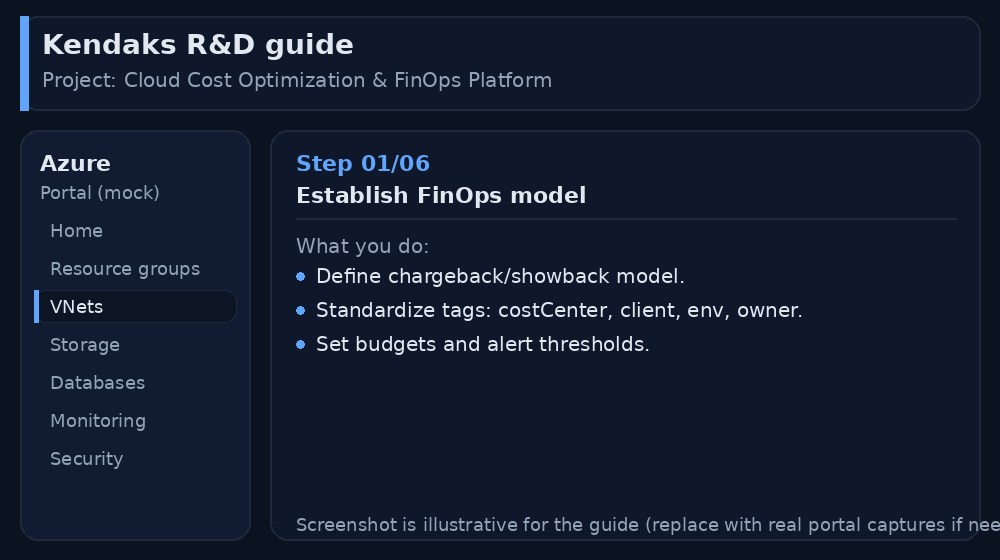
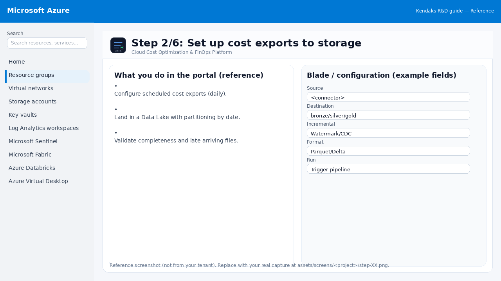
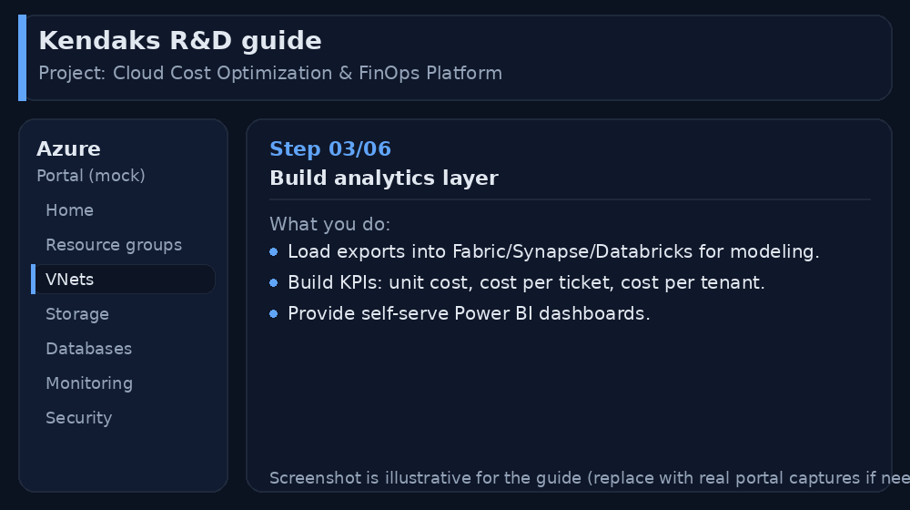
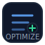
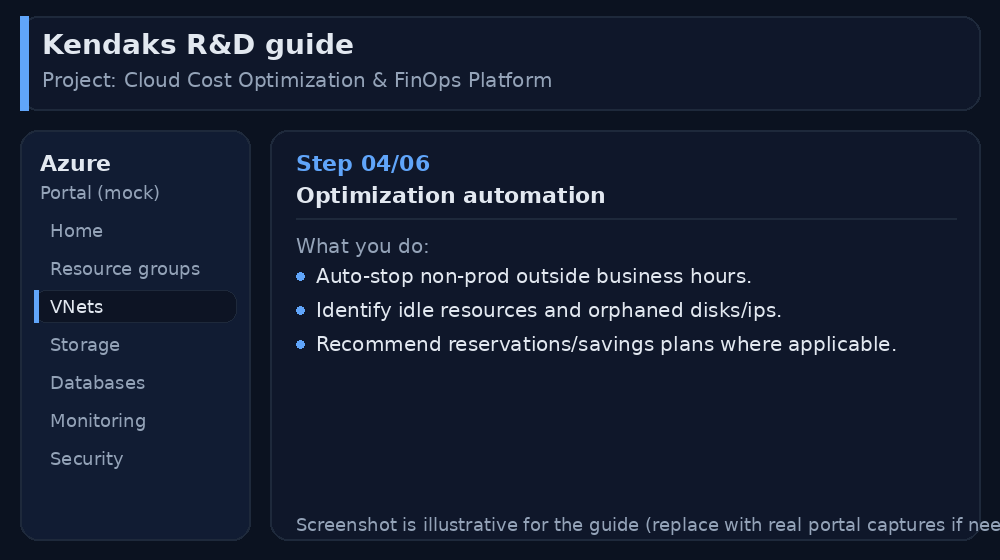
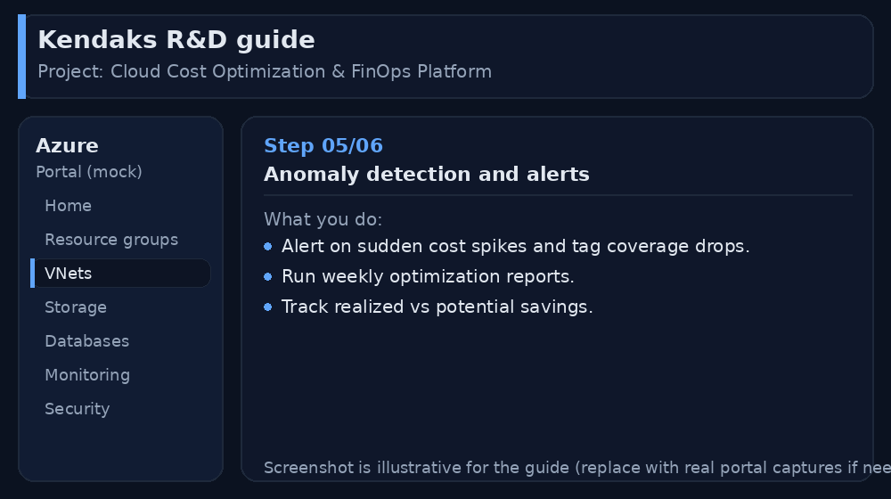
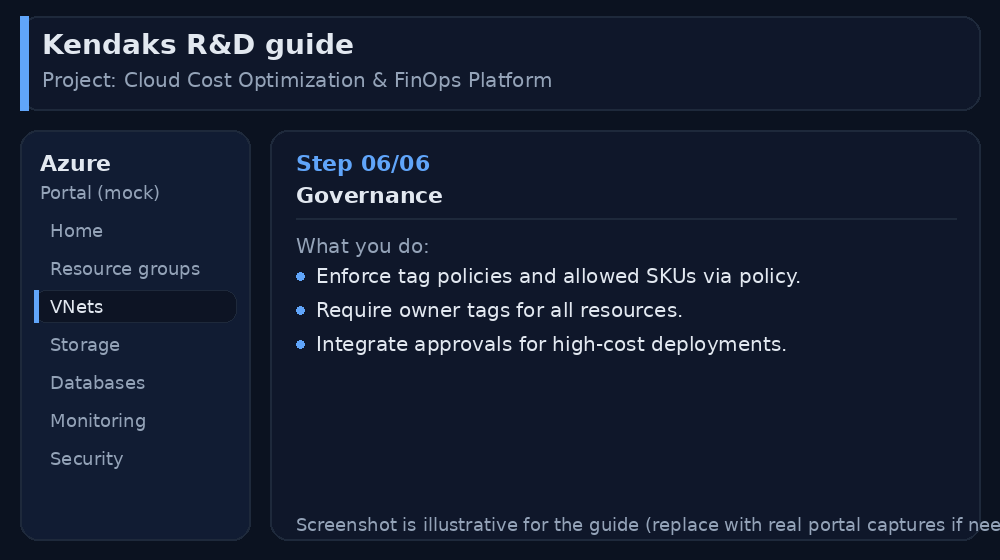

Cloud Cost Optimization & FinOps Platform
Category: FinOps
Scenario: Finance and engineering need cost visibility, anomaly detection, and optimization automation. Example: 'Kendaks FinOps' tags costs by client and enforces budgets.
Architecture diagram
High-level view of the main components and data/control flows.
Low-level architecture diagram (Visio-style)
Implementation view (networking, security, ops). Click to open full size.
Low-level architecture details
(No low-level text provided.)
Step-by-step implementation
Step 1/6
Establish FinOps model

Reference portal screenshot (click to zoom). Replace with your tenant capture if needed.
Define chargeback/showback model. Standardize tags: costCenter, client, env, owner. Set budgets and alert thresholds.
Validation checklist
Stakeholders have signed off the scope, SLAs, and data/security requirements. You have documented naming standards, environments, and ownership (RACI).
Step 2/6
Set up cost exports to storage

Reference portal screenshot (click to zoom). Replace with your tenant capture if needed.
Configure scheduled cost exports (daily). Land in a Data Lake with partitioning by date. Validate completeness and late-arriving files.
Validation checklist
The storage/lakehouse/warehouse resources are created and accessible via least privilege. A sample dataset lands successfully and can be queried/read end-to-end. Retention, encryption, and backup settings match requirements.
Step 3/6
Build analytics layer

Reference portal screenshot (click to zoom). Replace with your tenant capture if needed.
Load exports into Fabric/Synapse/Databricks for modeling. Build KPIs: unit cost, cost per ticket, cost per tenant. Provide self-serve Power BI dashboards.
Validation checklist
Connections/authentication succeed and test messages/records flow through. Retries/DLQ/error handling are configured and validated with a forced failure.
Step 4/6

Optimization automation

Reference portal screenshot (click to zoom). Replace with your tenant capture if needed.
Auto-stop non-prod outside business hours. Identify idle resources and orphaned disks/ips. Recommend reservations/savings plans where applicable.
Validation checklist
Budgets/alerts and cost reporting dashboards are in place. Rightsizing/scale rules are enabled and validated.
Step 5/6
Anomaly detection and alerts

Reference portal screenshot (click to zoom). Replace with your tenant capture if needed.
Alert on sudden cost spikes and tag coverage drops. Run weekly optimization reports. Track realized vs potential savings.
Validation checklist
Logs and metrics are flowing (check Log Analytics / Monitor). Alerts trigger correctly (test alert path to email/Teams/ITSM).
Step 6/6
Governance

Reference portal screenshot (click to zoom). Replace with your tenant capture if needed.
Enforce tag policies and allowed SKUs via policy. Require owner tags for all resources. Integrate approvals for high-cost deployments.
Validation checklist
RBAC/roles are assigned to Entra groups (no direct user assignments). Policies/labels/lineage settings are enabled as required. Audit logs are enabled and flowing to the central workspace/SIEM.